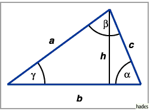

Höhe und Mittellinie des Dreiecks
- Höhe des Dreiecks
- wird das Lot genannt, das vom Scheitelpunkt eines der drei Dreieckwinkel auf die gegenüberliegende Seite gefällt wird. Die Höhen des Dreiecks schneiden sich im sogenannten Orthozentrum.

- Mittellinie des Dreiecks
- wird eine Gerade genannt, die die Mittelpunkte zweier Dreiecksseiten verbindet; sie liegt parallel zur dritten Seite und ist halb so lang wie diese.